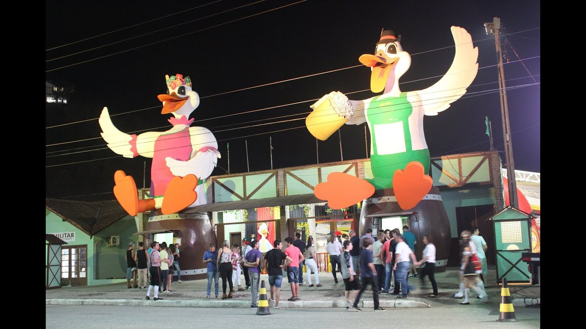
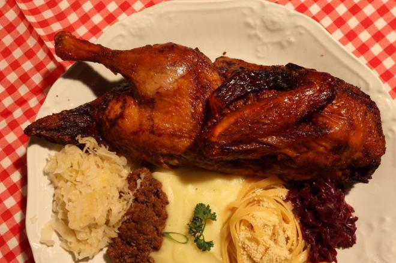
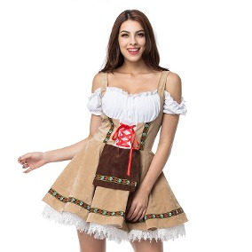
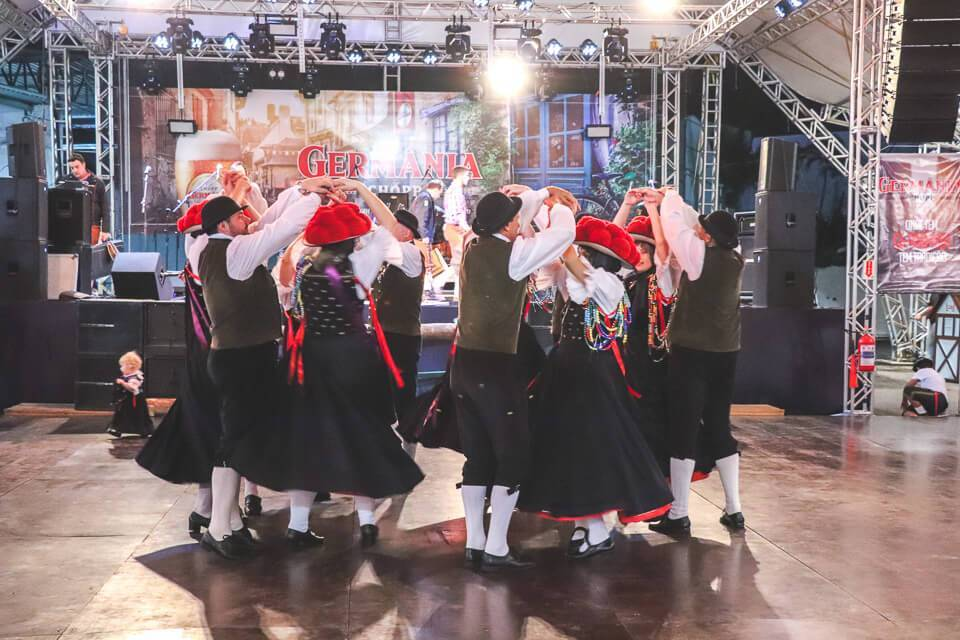
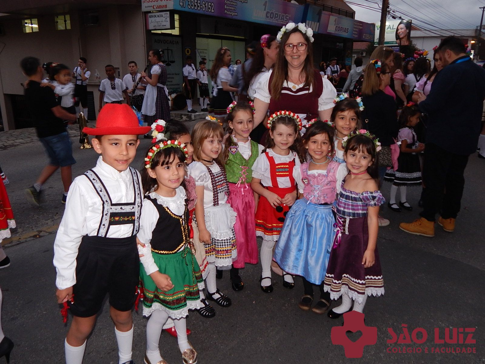

Data e onde acontece
A Festa Nacional do Marreco de Brusque – a Fenarreco, acontece desde 1986 e é uma das festas alemãs mais tradicionais do sul do Brasil. São mais de 30 anos da festa que tradicionalmente começa na segunda quinta-feira de outubro e dura cerca de duas semanas. A Fenarreco acontece no Pavilhão de Eventos Maria Celina Vidotto Imhof, conhecido também como o Pavilhão da Fenarreco.
História
A Festa Nacional do Marreco, nasceu em 1985, inspirada na criação da Oktoberfest, de Blumenau, para atender aos inúmeros turistas que chegavam à cidade à procura da carne de pato. O marreco tornou-se tradicional depois que os clubes começaram a adotá-lo entre as opções gastronômicas servidas durante festas e eventos sociais. O costume do uso da carne do marreco foi trazido pelos imigrantes alemães, que no continente europeu utilizavam o ganso como o principal prato na ceia natalina. Como em terras brasileiras, no início do século 19, não existiam gansos, eles foram substituídos inicialmente por patos selvagens e depois pela atual qualidade, denominado pato de pequim, já que marreco é a denominação dada ao pato de pequim na nossa região.
Tradicões
1. Comidas
2. Trajes
3. Danças típicas

Comidas
O tempero que levou 10 anos para combinar com o marreco é a grande aposta da Fenarreco, em Brusque. Para assar as mais de quatro mil unidades serão utilizados oito fornos a vapor. A tecnologia ajudou a melhorar a qualidade dos alimentos servidos na festa. A informação é de quem cuida dos pratos há mais de 20 anos.
Trajes
As roupas usadas são o estilo de Frida e Fritz e consiste em um estilo alemão, com tiara de flores vestidos e chapéus
Danças típicas
As danças são no estilo alemão, muito agitadas e divertidas, conquistando a todos!
Convite
Fenarreco, festa típica de Brusque
Venha participar você também
Após todas essas informações impossível você não querer ao menos dar uma passadinha para conhecer a festa!! :)